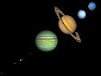

Macaulay2 is an interpreted, dynamically typed programming language designed to support research in commutative algebra, algebraic geometry and related fields. All components of the language are open sourced, including over two hundred contributed packages, and generously funded by the National Science Foundation.
This documentation describes version 1.26.05 of Macaulay2.
If you have used Macaulay2 in your research, please cite it as follows:
|
Moreover, you can use the cite function to learn how to cite any particular Macaulay2 packages which contributed to your research.
The object Macaulay2Doc is a package, defined in Macaulay2Doc.m2, with auxiliary files in Macaulay2Doc/.
The source of this document is in Macaulay2Doc/ov_top.m2:120:0.